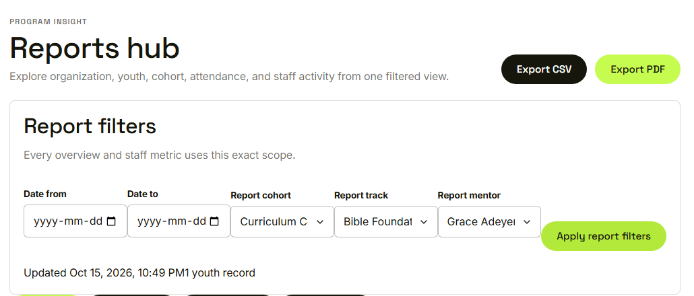
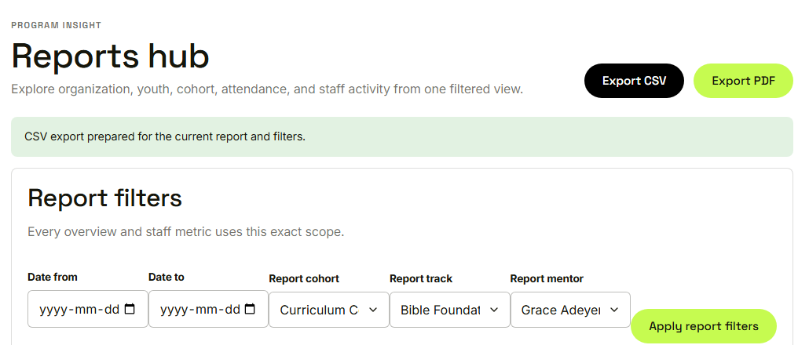
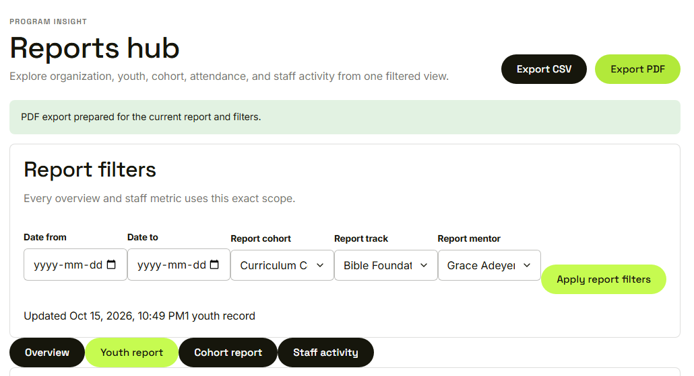
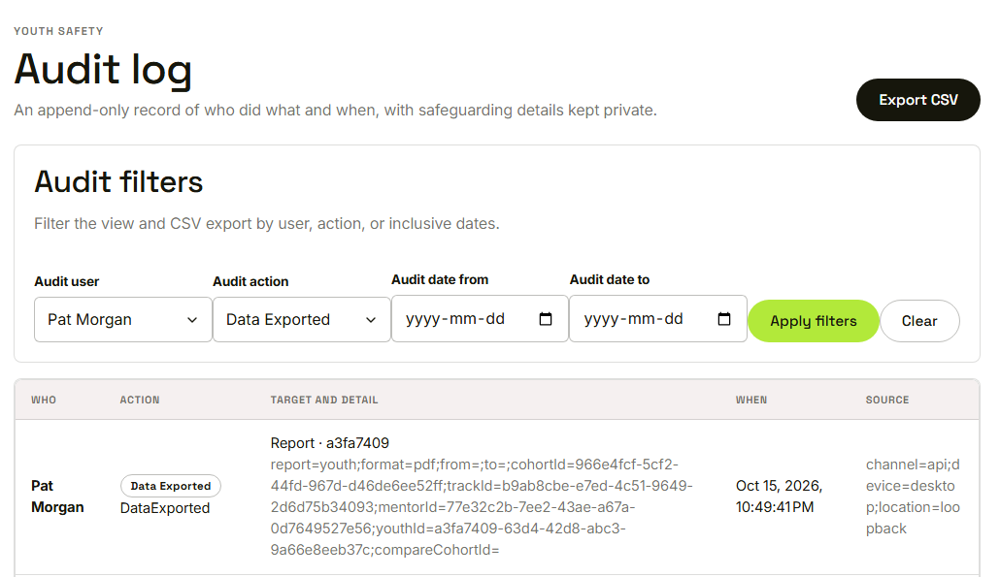
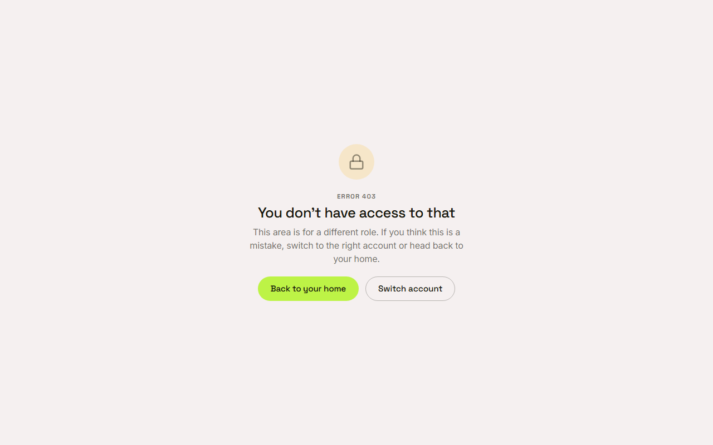

Waypoint · Video 098
Exporting filtered data
What you see is what you export
A filtered report

One cohort, one track, one mentor
Export CSV

CSV export prepared for the current report and filters
The same for a PDF

PDF export prepared for the current report and filters
Every export is recorded

Who exported, and when
Other roles are turned away

Grace opens the audit log and is denied
Things to remember
An export matches the screen and the filters
CSV is raw rows, PDF is a formatted summary
Nobody exports more than their role can see
Every export is in the audit log